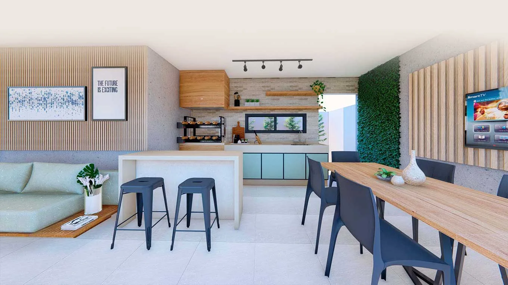

fazem sentido juntos.">Interiores
Ambientes que
fazem sentido juntos.
Layout, iluminação, materiais, marcenaria e mobiliário são pensados de forma integrada para criar ambientes funcionais e coerentes com a arquitetura.
Interiores como continuação da arquitetura.
Layout, iluminação, materiais, marcenaria e mobiliário são pensados de forma integrada para criar ambientes funcionais e coerentes com a arquitetura.
01
Layout e circulação
Organização dos ambientes a partir do uso real e das relações entre os espaços.
02
Materialidade
Combinações de revestimentos, cores, texturas e acabamentos com unidade visual.
03
Iluminação
Luz técnica e atmosfera consideradas junto das atividades de cada ambiente.
04
Detalhamento
Marcenaria, pontos técnicos e informações necessárias para a execução.
Projetos relacionados.
Converse sobre
seu projeto.
Uma conversa inicial ajuda a entender escopo, momento e próximos passos.
Solicitar uma conversa ↗